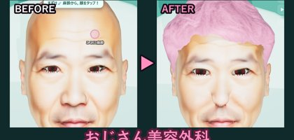
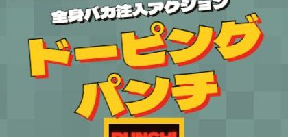
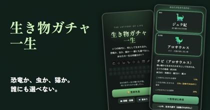

15:00
II
水筒をのむ
摩擦熱
放課後の校庭、ある小学生の記録
泥団子
磨き
このゲームは新しいアドレスに引っ越しました。
今のデータを持ったまま移動できます。
データを持って引っ越す
磨きはじめる
二日目
夜の校庭
三日目
夜明けの校庭
四日目
嵐の校庭
道具屋
棚
音：あり
泥だんご鑑定士・土井先生の鑑定
？
もう一回 磨く
道具屋
棚
タイトル
鑑定結果をXでポスト
次の新作の告知を受け取る
Xで @mainichi_labo をフォロー
同じ作者のゲーム（無料）

おじさん美容外科
おじさんをかわいく整形

ドーピングパンチ
注射して殴る
時代ガチャ人生
一生は何億分の1？

生き物ガチャ一生
恐竜か、虫か、猫か
百階の塔
100階をめざす3D
混ぜすぎ納豆
宇宙まで糸を引く
第七病棟
消灯後の3Dホラー
すべてのゲームを見る
道具屋
もどる
棚
もどる
ひと休み
続ける
音：あり
あきらめて帰る
 時代ガチャ人生一生は何億分の1？
時代ガチャ人生一生は何億分の1？ 百階の塔100階をめざす3D
百階の塔100階をめざす3D 混ぜすぎ納豆宇宙まで糸を引く
混ぜすぎ納豆宇宙まで糸を引く 第七病棟消灯後の3Dホラー
第七病棟消灯後の3Dホラー